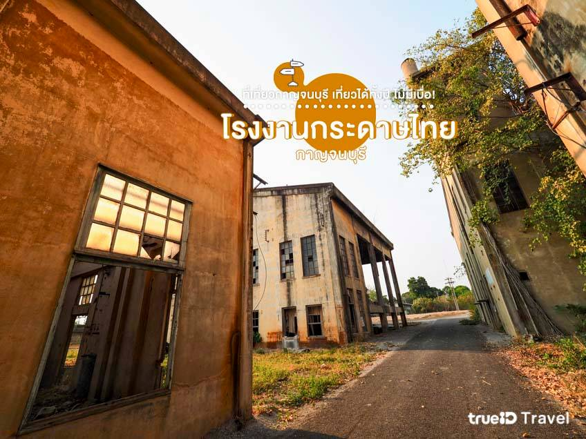

ถ้ำกระแซ ทางรถไฟสายมรณะ
ที่นี่เป็นจุดชมแม่น้ำแควที่เรียกว่าวิวดีที่สุดในเมืองกาญจนบุรีที่เราเรียกกันว่า ทางรถไฟสายมรณะ ค่ะ ถือว่าเป็นจุดที่สวยที่สุด และอันตรายที่สุดของเส้นทางรถไฟ ด้วยความสูงมากๆ และติดเลียบหน้าผาทำให้เสียวสันหลังเล็กๆ

สะพานข้ามแม่น้ำแคว
แลนด์มาร์คแรกๆ ที่ทำให้เราคิดถึงเมืองกาญจน์ ตรงที่แห่งนี้เป็นจุดเชื่อมโยงของประวัติศาสตร์โลกในหน้าสงครามโลกครั้งที่ 2 และเป็นอนุสรณ์สงครามมหาเอเชียบูรพา

โรงงานกระดาษไทยกาญจนบุรี
ดูเผินๆ ภายนอกนั้นเหมือนโรงกระดาษเก่าที่ปล่อยทิ้งร้าง แต่ตอนนี้ โรงกระดาษได้กลับมามีชีวิตอีกครั้งด้วยโครงการอนุรักษ์สถานที่ที่มีความสำคัญทางประวัติศาสตร์ให้แก่คนรุ่นหลัง และส่งเสริมการท่องเที่ยวเชิงวัฒนธรรมของจังหวัดกาญจนบุรีนั่นเอง